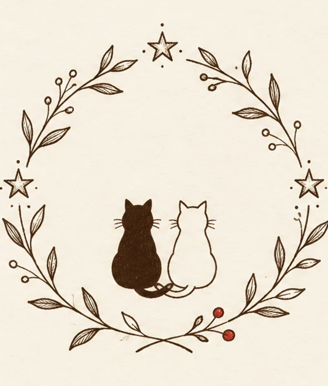
Сказка в четырнадцати главах
Про дождь, про тёплое окно
и про то, что вечер бывает один на двоих
Дождь в этом городе начинается без стука.
Сначала он просто висит в воздухе, будто кто-то забыл его выключить. Потом собирается каплями на водосточных трубах. И только когда трубы наполнятся до края, весь сразу падает вниз.
Уголёк знал это, потому что жил под трубой уже неделю.
Он был маленький и весь чёрный, только на груди росло белое пятнышко размером с палец. Оно было единственным светлым на нём. Уголёк думал, что пятнышко это отметина, по которой его когда-нибудь узнают.
Он сидел на крыльце у чужого дома. Дом был деревянный, высокий, с башенкой. В башенке горело круглое окно, как в будильнике.
За окном жили. Он понял это по запаху: от щели под дверью шло чаем, мокрой шерстью и чем-то ещё, тёплым, для чего у него не было слова.
Уголёк не мяукал. Его мама говорила: мяукать надо, когда тебя точно услышат. А тут его никто не слушал.
Он просто сидел и ждал, когда кончится дождь.
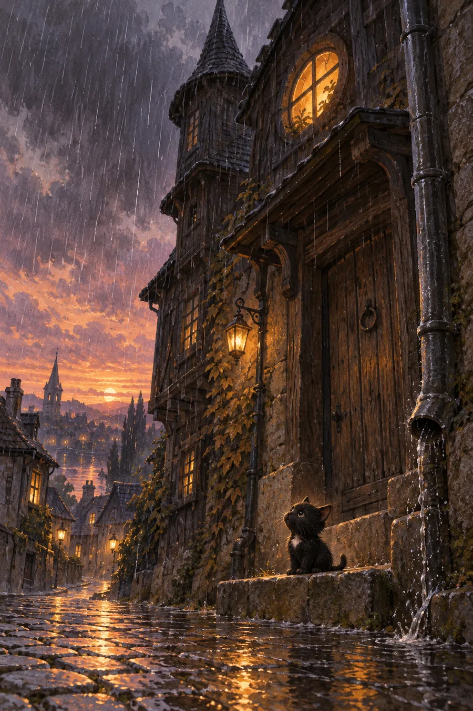
Дождь не кончался. Уголёк перестал ждать и стал смотреть под ноги.
Под ногами была вторая ступенька. Доска, стёртая посередине, с двумя гвоздиками по краям. И на ней лежала пуговица.
Пуговица была круглая, тёмная, с четырьмя дырками, и по краю у неё шёл узор, тонкий, как след птичьей лапы.
Уголёк потрогал её лапой. Она была холодная, но не мокрая, потому что лежала под козырьком.
Он сел рядом и стал думать.
Думать он умел только одно: если вещь лежит у чужого дома, значит, она чья-то. Если она чья-то, значит, её кто-то потерял. А если кто-то потерял, значит, этот кто-то, может быть, ищет.
Это было новое для него. Он сам ни разу не терялся, потому что его никто не искал. Мама ушла за едой вечером и не вернулась. Он ждал её ночь, потом день, потом перестал считать.
Пуговица лежала у него на лапе, и запах от неё никуда не исчезал. Табак, немного воска и что-то ещё, старое.
Тогда Уголёк решил. Он взял её в зубы и поднялся к двери.
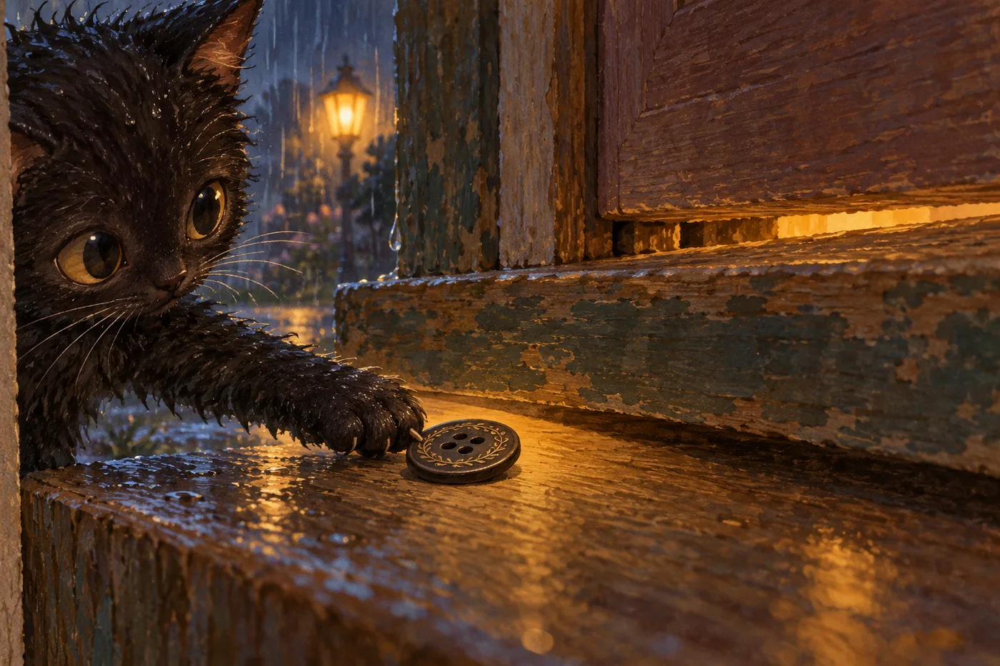
Дверь ему не открыли.
Он посидел под ней, потом на крыльце, потом опять под дверью. К утру дождь перестал, и Уголёк уснул прямо на ступеньке, свернувшись так, чтобы пуговица была внутри, между лапами.
А в это время внутри, за дверью, жила белая кошечка.
Её звали Снежка. Она была на пол-лета старше Уголька и считала себя взрослой, потому что умела открывать шпингалет и знала, где лежат спички.
У неё было всё на месте. Подушка у окна, чашка с голубым ободком, полка книг, которые читал старик. Старик читал вслух по вечерам, а Снежка слушала и запоминала.
Из всех книжек она любила одну. Про маяк.
В той книжке на последней странице была нарисована скала, и на скале стоял маяк, и от него шёл свет. Снежка была уверена, что видела этот маяк из окна. Проверить не могла: на улицу она выходила один раз, в прошлом марте, дошла до второго фонаря и вернулась бегом, потому что на неё посмотрел голубь.
Больше она не выходила.
В ту ночь старик уснул в кресле, и книжка лежала у него на груди, и серая кошка спала на ковре.
Снежка сидела на подоконнике и смотрела на своё отражение в тёмном стекле. За стеклом ничего не было видно, только она сама. Поэтому она не сразу поняла, что происходит, когда внизу, на крыльце, кто-то очень тихо перестал шевелиться.
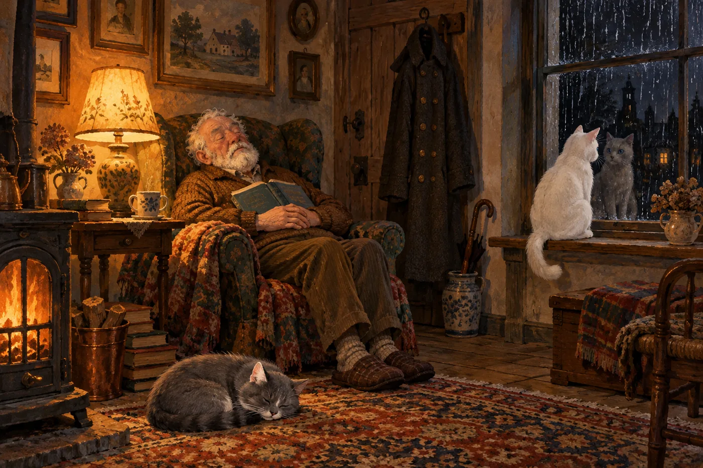
Утром Снежка нашла пустое место.
Старик встал и ушёл на кухню, и пальто, которое висело на гвозде у двери, осталось висеть одно.
Пальто было старое, выходное, из тёмной шерсти, и по воротнику у него шли пуговицы, такие же тёмные, с четырьмя дырками и узором по краю.
Одной не было.
Снежка долго смотрела на это место. Оно было круглое, обшитое, и оттуда торчали две короткие нитки, завязанные узелком.
Пальто старик не носил очень давно. Но каждую зиму он снимал его с гвоздя и что-то с ним делал. То пришивал, то отпарывал, то просто стоял перед зеркалом и держал его на весу.
После этого он садился в кресло и подолгу молчал, а серая кошка приходила и ложилась ему на ноги.
Снежка знала про пальто одну вещь. Пуговица пропала в тот день, когда старик вернулся с кладбища.
Снежка тогда была ещё котёнком и не понимала, что такое кладбище. Она понимала только, что вернулся он без пальто на плечах, в одном пиджаке, и нёс его в руках, аккуратно, как носят что-то тяжёлое.
Она посмотрела на пустое место ещё раз. Потом встала, потянулась, вздохнула так, как вздыхают взрослые, и пошла вниз.
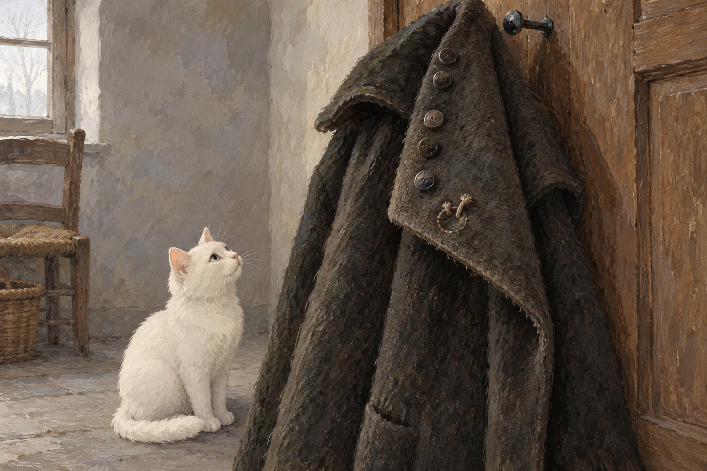
Они встретились посередине улицы, у лужи, в которой плавала луна.
Снежка никогда не видела, чтобы кто-то был настолько мокрым. Уголёк никогда не видел ничего белее.
Он поставил пуговицу на камень между ними. Не отдал, а именно поставил, чтобы было видно.
Снежка узнала её сразу. И тогда она сделала то, чего не делала никогда: села в лужу, чтобы быть с ним на одном уровне, и сказала первое, что пришло в голову.
Она сказала: это наше.
Уголёк не понял. Он думал, что пуговица ничья, а она оказалась наша, и это слово было новым, и от него пахло тем же, чем от щели под дверью.
Он спросил: а ты кто?
Снежка сказала: я та, у кого есть дом, и я тебе его покажу, но сначала нам надо вернуть это на место, потому что без этого дом не совсем дом.
Уголёк не спросил, почему. Он вообще был не из тех, кто много спрашивает. Он поднял пуговицу и пошёл за ней.
Дождь кончился, пока они шли. Это заметил только Уголёк: с шерсти наконец перестало капать.
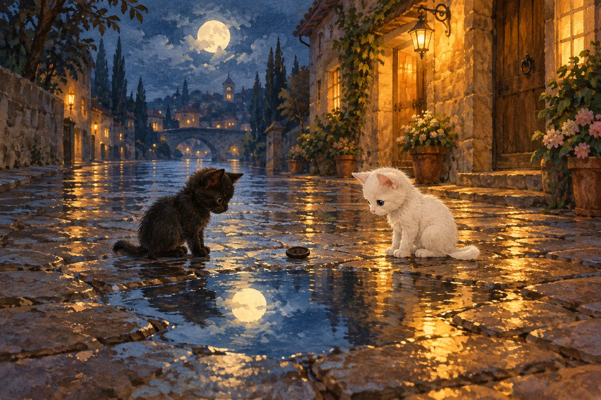
В дом они вошли не через парадную дверь, а через кухню, потому что кухонная дверца была без замка.
Старик спал в кресле. Серая кошка открыла один глаз, посмотрела на две мокрые фигурки, вздохнула и закрыла его снова. Так взрослые говорят: я вас не видела, но я всё знаю.
На кухне капало с потолка в кастрюлю. Тонко, ровно, с паузами.
Уголёк сел под капелью и стал смотреть, как капля растёт, набухает, тянется вниз и срывается. Он насчитал тридцать одну каплю и на тридцать второй уснул, потому что тридцать один раз было достаточно для дня, в котором он нашёл пуговицу, спасся от дождя и узнал слово наше.
Снежка сидела рядом и не спала. Она смотрела на свой дом с той стороны, с которой никогда его не видела, и на полку книг, и на кресло, и ей было странно, что всё это может быть не на месте.
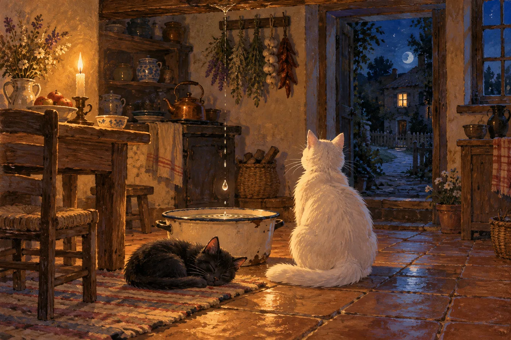
Утром Снежка показала ему дом.
В шкафу нашлась корзинка с шерстью, и Снежка сказала: это для варежек. Уголёк сказал: это для того, чтобы размотать. Он был прав.
Они размотали шесть клубков за один вечер. Красный укатился под комод. Голубой обмотался вокруг ножки стула и стал похож на столб. Жёлтый упал в корзину с вязанием, и его искали полчаса, и это было нечестно.
Старик вошёл, увидел пол, полностью покрытый шерстью, и двух котов, которые делали вид, что они тут проходили мимо. Он постоял, посмотрел и сказал: ну, хоть не порвали.
Уголёк ждал, что его прогонят. Он был готов к этому. К тому, что его не станут прогонять, он готов не был.
Пуговицу он всё это время держал при себе и никому не показывал. Он ждал подходящего момента и не знал, как он выглядит.
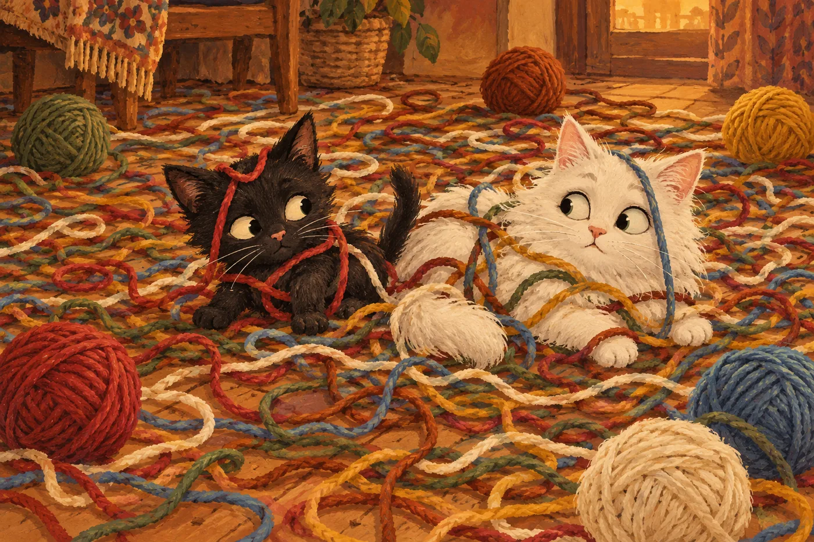
В каждом доме есть место, куда никто не ходит. В этом доме оно было наверху.
За дверцей с медной ручкой начиналась лестница. Она уходила вверх, и в её конце всегда было темно. Уголёк обошёл эту дверцу три раза. На четвёртый Снежка сказала: ну иди уже.
Он поднялся первым. Она за ним, на три ступеньки ниже, потому что по лестнице не ходят рядом.
Ступеньки скрипели по очереди, каждая своим голосом. Седьмая сказала: не надо. Восьмая сказала: поздно.
Наверху было тихо. Не страшно, просто тихо, как бывает в чужом шкафу, когда понимаешь, что тебя никто не ищет.
И там было окно.
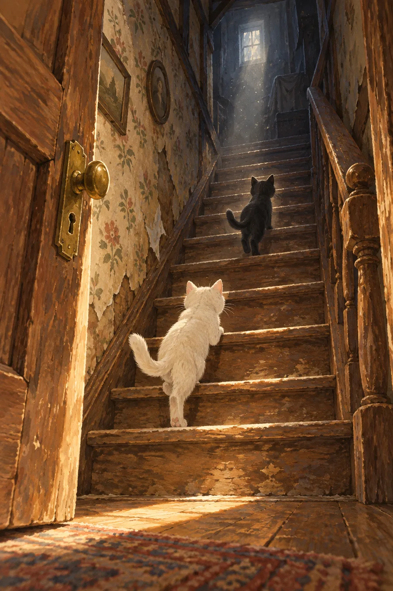
Чердак оказался больше, чем весь дом.
Круглое окно было открыто, и в него входила ночь. Звёзды лежали густо, как шерсть на полу.
Вокруг стояли сундуки. Пахло пылью и лавандой. В углу стоял телескоп, весь медный, слегка наклонённый, будто от него только что отошли. На гвозде висела карта неба, а под картой лежала жестянка из-под чая, и в ней, если потрясти, что-то стучало.
Снежка залезла на сундук и сняла жестянку. В ней было пять пуговиц. Такие же, тёмные, с узором по краю, только пришивать их было уже некуда: все её пальто старик раздал весной.
Уголёк достал свою и положил рядом. Она подошла к остальным, как будто всю жизнь лежала с ними в одной жестянке.
Снежка села и сказала: странно.
Уголёк не понял, что тут странного. Пуговица нашлась в доме, где таких пуговиц полная жестянка. По его разумению, это было лучшее из возможных окончаний и можно было спать.
Снежка смотрела на жестянку и думала другое. Она думала, что пуговица потерялась не просто так, а в тот день, когда старик вернулся с кладбища, и что если пуговиц шесть, а на пальто нужно шесть, то, может быть, старик снял их сам. По одной. Каждый год по одной, чтобы пальто переставало быть тем пальто.
Тогда их надо вернуть все. Не одну.
Она сказала это вслух. Уголёк посмотрел на неё и впервые за всю свою жизнь сказал что-то сам, без подсказки.
Он сказал: тогда надо найти все.
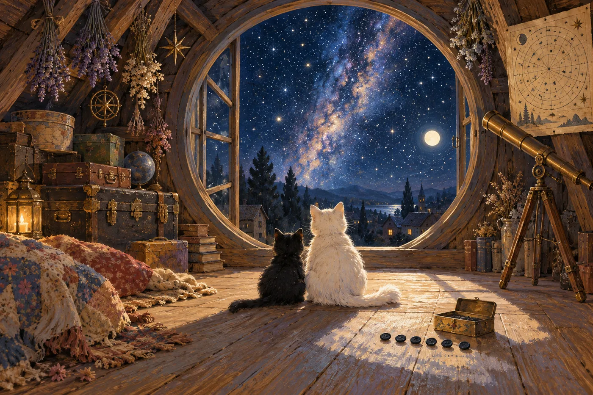
В ту сторону, куда смотрело круглое окно, был маяк.
Снежка узнала его по книжке. В книжке он был нарисован одной прямой линией, а на самом деле луч был не прямой, а дрожащий, и он всегда возвращался на место через ровные промежутки времени.
Уголёк смотрел на луч и не мог понять, откуда он идёт. Снежка объяснила: иногда всё, что тебе нужно знать о мире, находится очень далеко, и ты видишь только его луч.
Уголёк спросил: а если я пойду к нему, он меня дождётся?
Снежка сказала: он никуда не уходит. Он светит по кругу и возвращается.
Старик поднялся на чердак за ними. Они не слышали, потому что седьмая ступенька его не предупредила. Он постоял в дверях, посмотрел на двух котов у открытого окна, на жестянку с пуговицами, которую они разложили на полу, и ничего не сказал.
Потом сел на сундук, взял пуговицу в руки и стал смотреть в окно.
Уголёк подумал, что сейчас будет крик или что-то тяжёлое, и прижался к полу. Снежка не прижалась. Она сидела рядом со стариком и смотрела на маяк.
Они сидели так долго. Свет возвращался.
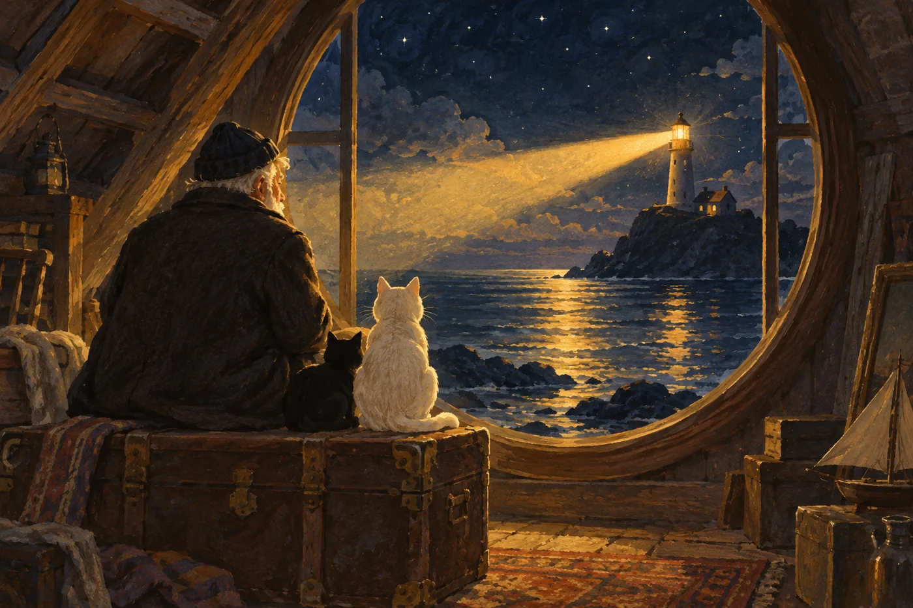
Осенью они вышли за город, потому что Снежка вспомнила: на последних страницах книжки про маяк были нарисованы светляки, и она сказала, что хочет проверить, правда ли они такие.
Дождь шёл по улицам, но на поляне не шёл. Там трава стояла по грудь и пахла сыростью, а светляки начинались сразу за ней и не кончались.
Их было много, но не как звёзд. Звёзды лежат слоем, а светляки двигаются, каждый сам по себе, и поэтому небо на земле получается не таким, как наверху, а другим, живым.
Уголёк побежал за огоньком и не поймал. Потом за вторым и тоже не поймал. Потом перестал ловить и просто сел.
Снежка легла рядом. Уголёк спросил: они спят?
Снежка сказала: эти нет. Есть люди, которые днём спят, а ночью светят.
Уголёк долго молчал, а потом сказал: как мы.
Это было первое, что он сказал о них как об одном. Снежка услышала и промолчала, потому что от такого слова обычно становится тепло и хочется это не портить.
Они вернулись к утру, все в мокрой траве, и старик делал вид, что всю ночь не подходил к двери, хотя дверь на кухню была приоткрыта ровно настолько, чтобы в щель смотрело тепло.
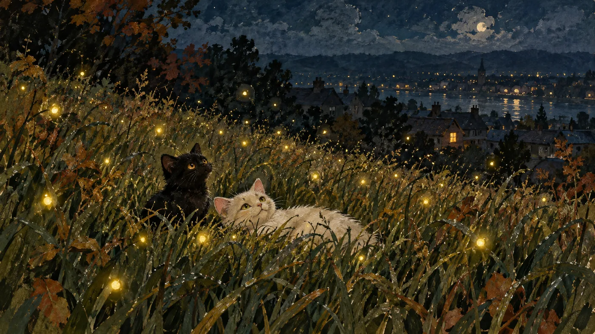
Первый снег пошёл ночью, когда Уголёк уже привык считать, что знает про мир всё, кроме главного.
Он его не узнал. Сел у окна, смотрел на белые точки в темноте и думал, что это очень мелкий и очень медленный дождь, который не падает вниз, а висит. Потом увидел, что белое остаётся лежать на подоконнике.
Снежка сказала: это зима.
Уголёк прижался к стеклу ближе. Оба следа остались на стекле, один тёмный, другой светлый. Он подумал, что сейчас наступило что-то важное, но не знал, как это называется. А если не знаешь, как называется, то и говорить нечего.
Снежка думала про другое. Она думала про пальто.
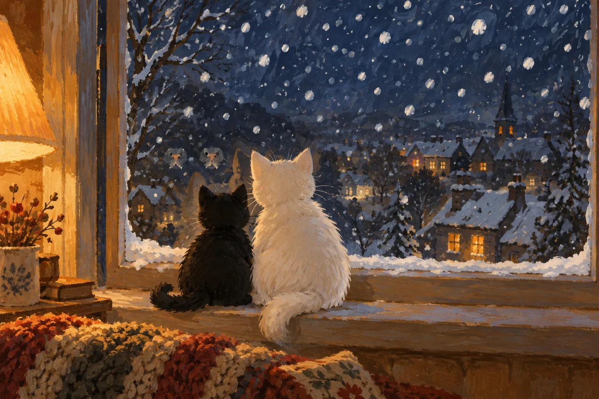
К зиме старик снял пальто с гвоздя.
Он надел его, постоял перед зеркалом, подёргал за рукава, и видно было, что оно велико ему на два размера и что так было всегда, потому что раньше оно было на двоих.
Потом он сел к лампе, достал жестянку и высыпал пуговицы на стол.
Снежка пододвинула к нему последнюю. Он взял её, посмотрел на двух котов, и Уголёк понял, что сейчас будет что-то, к чему его никто не готовил.
Старик сказал: и ты тоже.
Он шил долго, как будто это было самое трудное дело в доме. Он пришивал их по одной. После каждой останавливался, держа иголку неподвижно, и тогда в комнате было слышно, как капает с крыши.
Потом он надел пальто, сел в кресло, и серая кошка пришла и легла ему на ноги.
Корзину поставили на кухонный стул. Кто её туда поставил, никто не помнил: может, старик, может, серая кошка. В корзине была белая ткань, немного пахнущая мылом, и там было ровно столько места, сколько двум кошкам хватает, если не толкаться.
То есть, если толкаться, тоже хватало.
Уголёк залез первым. Снежка встала рядом и посмотрела на него, и он подвинулся.
На плите грелся чайник. За окном шло шумное, большое, недоброе, но далёкое.
Никакая сказка не кончается тем, что всё плохое исчезло. Но иногда плохое просто становится далеко, а тепло становится близко. Этого достаточно.
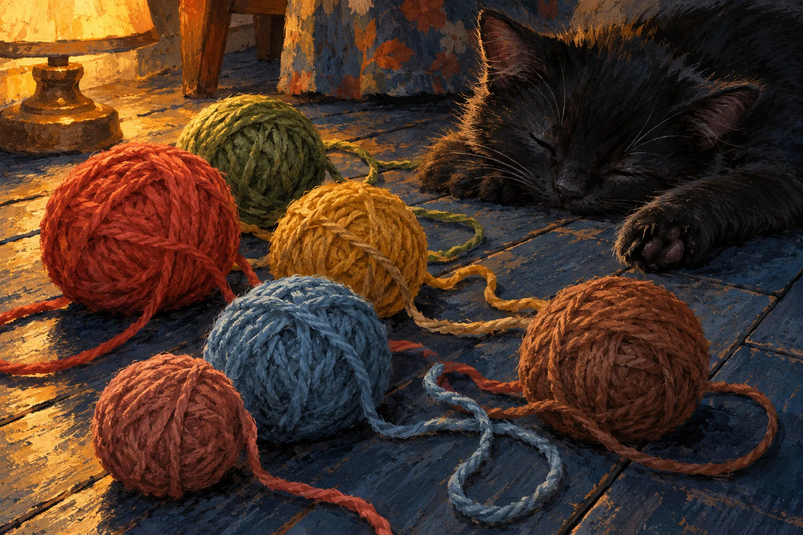
Кошечка смотала их обратно, кроме одного. Тот остался у котёнка под лапой.
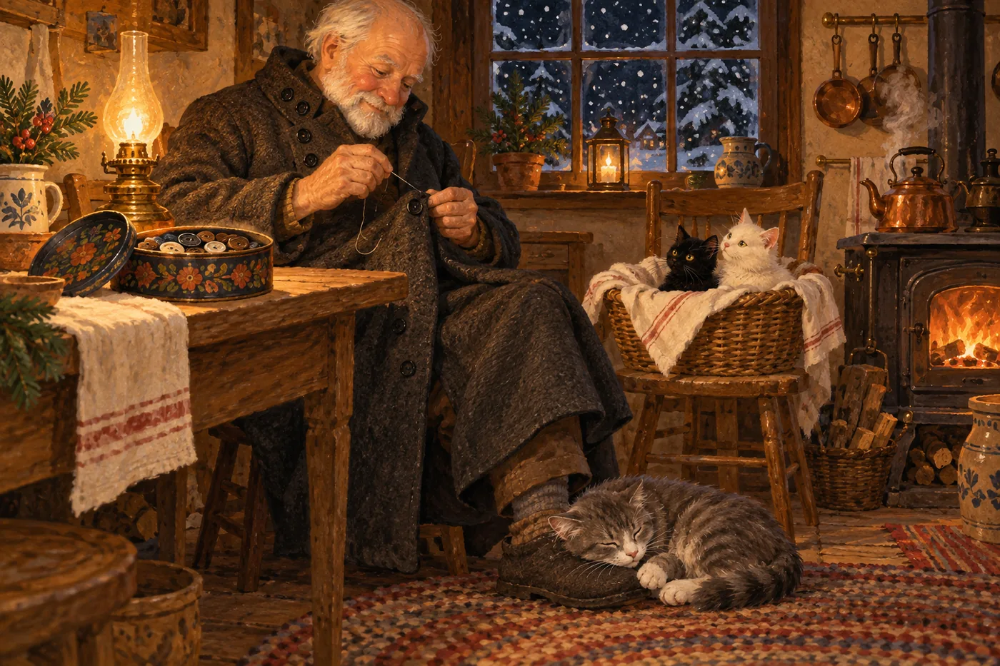
Утро началось рано и без предупреждения. Оно всегда так.
Уголёк проснулся первым и пошёл к окну. Снаружи было розовое, и снег на крышах был тоже розовый, и мачта маяка вдалеке стояла прямо в этом розовом, как будто её поставили туда специально.
Снежка пришла через минуту. Он даже не услышал.
Они сидели рядом. Не потому, что так надо. Просто было удобно.
За их спинами старик в застёгнутом пальто спал в кресле. На воротнике у него блестели шесть пуговиц, и в утреннем свете они были похожи на маленькие окна.
Уголёк смотрел на маяк, который теперь знал по имени, на дождь, который умел ждать, и на белую кошечку рядом. Она была не домом и не светом, а тем, из-за чего дом и свет вообще нужны.
Это был фонарик на чужом чердаке, забытый с лета. Но с крыши он был совсем как звезда.
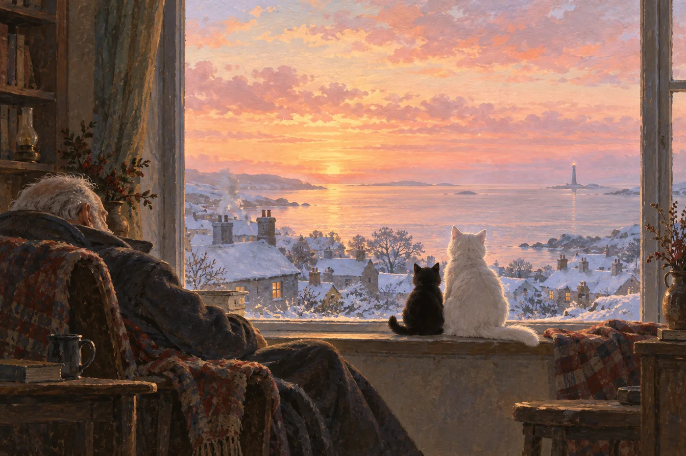
Белая кошечка рассыпала шерсть по половицам. Чёрный котёнок сделал вид, что спит, но один глаз у него остался открыт.
Найди шесть клубков.
Нажми на часть, потом на её место. Или перетащи.
собрано 0 / 6
Луна, дорожка на воде, две фигурки на подоконнике. Вот он, этот вечер.
Как-то ночью над крышами зажглась звезда не на своём месте. Она была тёплой, и от неё пахло домом.
Найди её.
Картина, которую котёнок видел из окна, рассыпалась на шесть частей.
Собери вечер обратно.
На этом сказка кончается.
Но окно осталось открытым.
2 379 слов · 12 глав · 3 игры